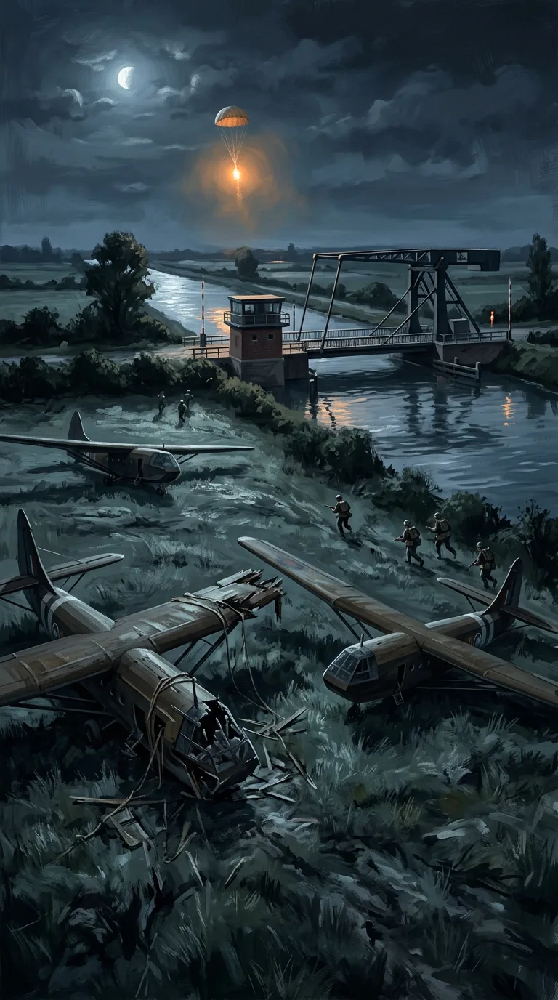

What's next
Long Bloody Road follows the men who fought the war on the ground, one campaign at a time. This is the road ahead.

Out now: Normandy, June and July 1944
Four missions in the hedgerows, from Carentan to Operation Cobra, with the same men carried through all of them. The first two are free.
December 2026: Africa's Dust. North Africa, 1941 to 1942
The first SAS raids. Cross the desert by night, destroy the airfield, and be gone by dawn. See the campaign.
Planned after that
There are no dates for these yet, and the order may change.
-
Commando raids on the French coast, 1942
Small forces put ashore from the sea to wreck a dock or silence a gun battery, then get away again.
-
Pegasus Bridge, 6 June 1944
The night before the hedgerows: glider troops land beside the bridges over the Caen canal and the Orne just after midnight, take them in minutes, then hold them until relief arrives.
-
Holland, September 1944
Follow the 101st Airborne from Normandy into Holland, where they jumped to hold open the road north and its bridges. Further up that road, British paratroopers hold the north end of the bridge at Arnhem for days, waiting for a relief that never gets through.
-
Bastogne, December 1944
With the 101st again: surrounded in the Ardennes winter, holding the town until relief breaks through.
Tell us what you'd like
If there's a battle or a campaign you'd like to see, email hello@longbloodyroad.com.